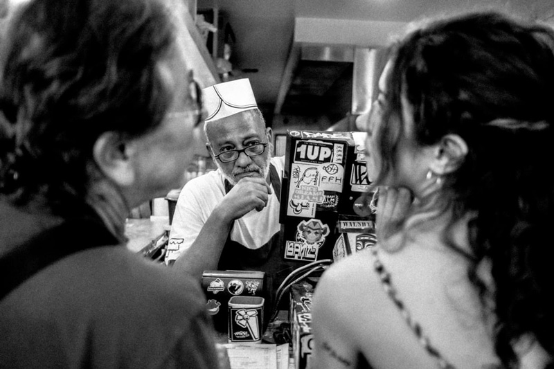

Admit it. You aren’t like them. You’re not even close. You may occasionally dress yourself up as one of them, watch the same mindless television shows as they do, maybe even eat the same fast food sometimes.
But it seems that the more you try to fit in, the more you feel like an outsider, watching the “normal people” as they go about their automatic existences. For every time you say club passwords like “Have a nice day” and “Weather’s awful today, eh?”, you yearn inside to say forbidden things like “Tell me something that makes you cry” or “What do you think deja vu is for?”. Face it, you even want to talk to that girl in the elevator.
But what if that girl in the elevator (and the balding man who walks past your cubicle at work) are thinking the same thing? Who knows what you might learn from taking a chance on conversation with a stranger? Everyone carries a piece of the puzzle. Nobody comes into your life by mere coincidence. Trust your instincts. Do the unexpected. Find the others…
Timothy Francis Leary
(October 22, 1920 – May 31, 1996)